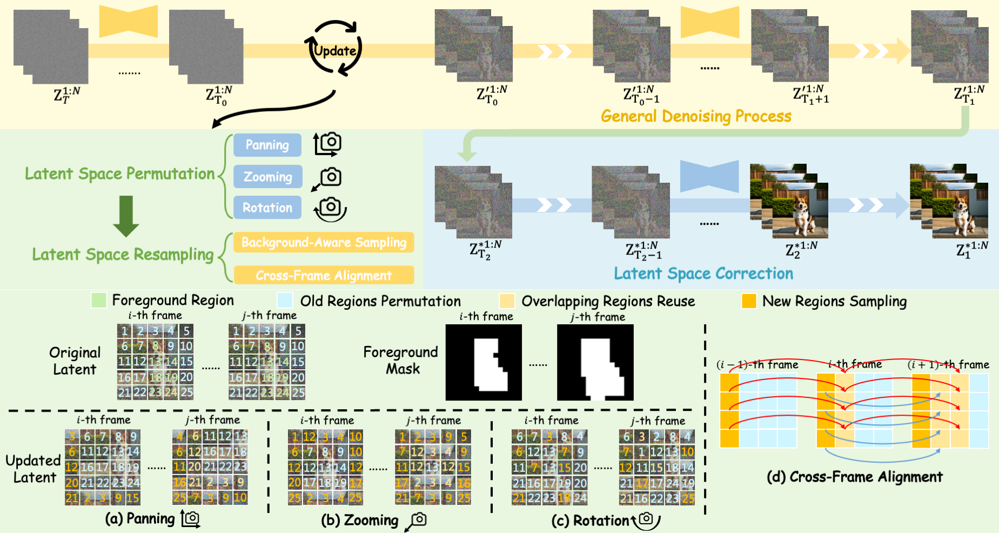

LightMotion: A Light and Tuning-free Method for Simulating Camera Motion in Video Generation

TL;DR: We presents LightMotion, a light and tuning-free for simulating camera motion in video generation. Operating in latent space, it eliminates additional fine-tuning, inpainting, and depth estimation, making it more streamlined than existing methods.
Abstract
Existing camera-controlled video generation methods face fine-tuning overhead or inference bottlenecks. In this paper, we propose LightMotion, a light and tuning-free method for simulating camera motion in video generation. Operating in latent space, it eliminates fine-tuning, inpainting, and depth estimation, making it more streamlined than existing methods. The endeavors of this paper comprise: (i) The latent space permutation simulates three basic camera motions: panning, zooming, and rotation, whose combinations cover almost all real-world movements. (ii) The latent space resampling combines background-aware sampling with cross-frame alignment, accurately filling new perspectives while maintaining coherence across frames. (iii) Our analysis reveals that the tuning-free permutation and resampling will cause an SNR shift in latent space, leading to poor generation. To address this, we propose the latent space correction, which mitigates the shift and improves generation quality. Extensive experiments validate the superiority of LightMotion over other baselines. The code will be released later.
Method
We propose LightMotion, a light and tuning-free method for simulating camera motion in video generation. During inference, LightMotion first performs standard denoising to T0 It then applies latent space permutation to simulate diverse camera motions, combined with latent space resampling to fill in newly exposed views. Subsequently, the model continues standard denoising to T1 to preserve semantic integrity and camera motion consistency. To mitigate the SNR shift introduced by tuning-free permutation and resampling, we introduce latent space correction, which refines the SNR shift and enables higher-quality generation results. The overall framework is illustrated below:

Visual Gallery
Qualitative Comparison
Panning Right(A hawk perches on a wooden crossbeam overlooking a wide plain.)
Zooming Out(A butterfly flutters above a small flower in a garden.)
Zooming In (A cat sits on a tree stump watching a butterfly flutter nearby.)
Rotation (A seagull stands on the edge of a fishing boat with the ocean stretching beyond.)
BibTeX
@article{song2025lightmotion,
title={LightMotion: A Light and Tuning-free Method for Simulating Camera Motion in Video Generation},
author={Song, Quanjian and Lin, Zhihang and Zeng, Zhanpeng and Zhang, Ziyue and Cao, Liujuan and Ji, Rongrong},
journal={arXiv preprint arXiv:2503.06508},
year={2025}
}